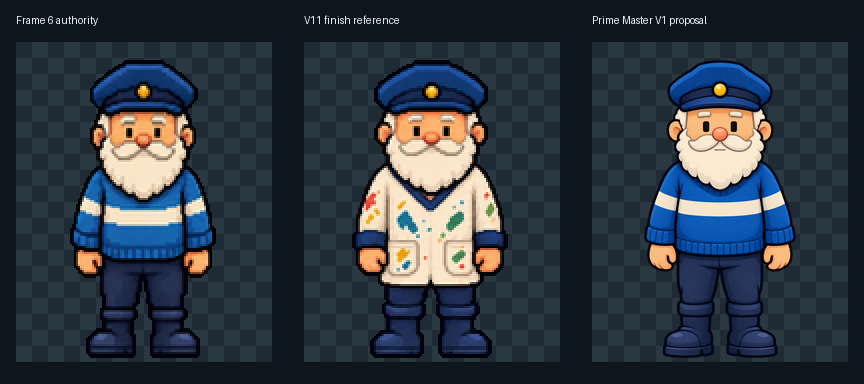
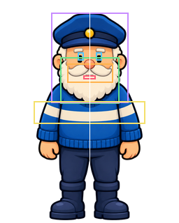
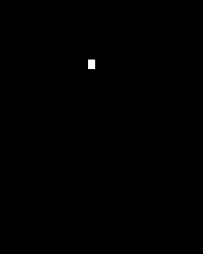
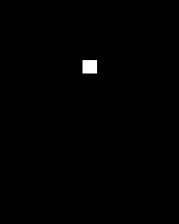
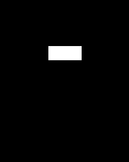
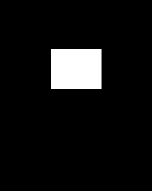
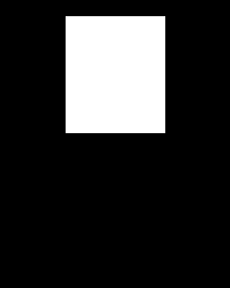

Frame 6 identity authority

6d3b5057f7dad4410230c5c2a1959a2db468aca6f2d28486ec6db9e07827056a
A new smooth high-resolution foundation derived from Frame 6 identity. No animation, raw sprite, runtime sprite or manifest has been promoted.
6d3b5057f7dad4410230c5c2a1959a2db468aca6f2d28486ec6db9e07827056a
14c70ab69c9cb558d1a7b9b092425718a43269ea8fb2a20ad3d64638d30ea17a
a9a5c37fe72221992ec499fa3096fdd0581977b4ac03ff7788da2af411107a2e
User-selected design decision: one broad pale chest band replaces the legacy double stripe so the uniform remains stable through turns and action poses. The double-stripe generations are rejected provenance.


{
"verticalIdentityAxisX": 128,
"floorAnchor": [
128,
320
],
"capTopY": 18,
"headEnvelopeBoundsExclusive": [
73,
18,
184,
148
],
"leftEyeBoundsExclusive": [
111,
75,
120,
87
],
"rightEyeBoundsExclusive": [
137,
75,
146,
87
],
"noseBoundsExclusive": [
118,
86,
139,
105
],
"moustacheBoundsExclusive": [
96,
91,
162,
119
],
"mouthBoundsExclusive": [
119,
108,
137,
114
],
"beardEnvelopeBoundsExclusive": [
86,
82,
171,
149
],
"chestBandBoundsExclusive": [
48,
145,
208,
178
]
}
[111, 75, 120, 87]
[137, 75, 146, 87]

[118, 86, 139, 105]

[96, 91, 162, 119]
[119, 108, 137, 114]

[86, 82, 171, 149]

[73, 18, 184, 148]
[48, 145, 208, 178]
This is the only active foundation candidate. Every existing animation is unapproved. Full animation redrafting begins only after explicit approval of this master.